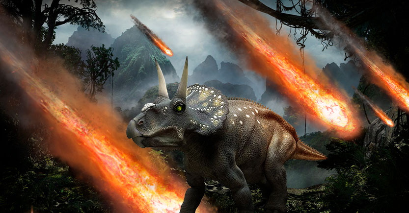

extincion
extincion
Durante años, los cientificos han debatado sobre la causa de la extincion del cretacico entre el impacto. hace 65 millones de años se extinguio el ultimo dinosaurio. Los gigantescos mosasaurio y plesiosaurios.
